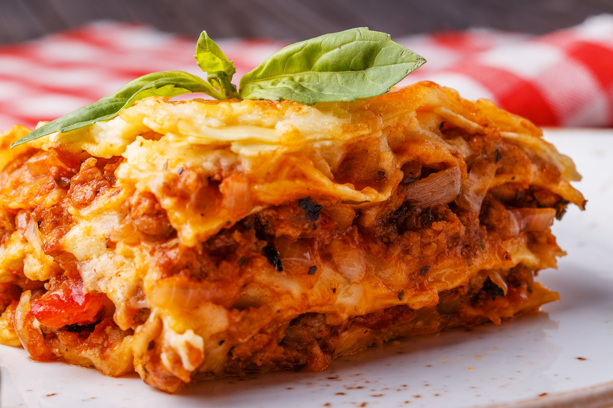

Lasagna

La lasaña es un clásico plato italiano compuesto por capas de pasta intercaladas con carne, salsa de tomate, queso y, a menudo, bechamel. Es una receta versátil que permite incluir vegetales, diferentes tipos de carne o incluso opciones vegetarianas, ofreciendo un equilibrio perfecto entre sabor y textura.
Ingredientes
Salsa de Carne
- 500 g de carne molida (res o mezcla de res y cerdo).
- 1 cebolla mediana, finamente picada.
- 2 dientes de ajo, picados.
- 400 g de tomate triturado o salsa de tomate.
- 2 cucharadas de pasta de tomate.
- 1 cucharadita de azúcar.
- 1 cucharadita de orégano seco.
- 1 cucharadita de albahaca seca.
- Sal y pimienta al gusto.
- 2 cucharadas de aceite de oliva.
Salsa bechamel
- 2 cucharadas de mantequilla.
- 2 cucharadas de harina.
- 500 ml de leche.
- Una pizca de nuez moscada (opcional).
- Sal y pimienta al gusto.
Preparación
- Prepara la salsa de carne:
- En una sartén grande, calienta el aceite de oliva a fuego medio.
- Sofríe la cebolla y el ajo hasta que estén dorados.
- Agrega la carne molida y cocina hasta que pierda su color rosado.
- Incorpora el tomate triturado, la pasta de tomate, el azúcar, el orégano, la albahaca, sal y pimienta.
- Cocina a fuego lento por 20-25 minutos, removiendo ocasionalmente, hasta que la salsa espese.
- Prepara la salsa bechamel:
- En una cacerola, derrite la mantequilla a fuego medio.
- Añade la harina y mezcla constantemente durante 1-2 minutos para formar un roux.
- Poco a poco, agrega la leche sin dejar de remover para evitar grumos.
- Cocina hasta que la salsa espese y tenga una textura cremosa.
- Añade sal, pimienta y una pizca de nuez moscada al gusto.
- Monta la lasaña:
- Precalienta el horno a 180 °C (350 °F).
- Engrasa un molde para hornear con mantequilla o aceite.
- Coloca una capa fina de salsa de carne en el fondo del molde.
- Añade una capa de láminas de pasta.
- Cubre con una capa de salsa de carne, una capa de bechamel y un poco de mozzarella rallada.
- Repite las capas (pasta, salsa de carne, bechamel, queso) hasta agotar los ingredientes, terminando con queso mozzarella y parmesano en la capa superior.
- Hornea:
- Cubre el molde con papel aluminio (evita que toque el queso).
- Hornea durante 25-30 minutos.
- Retira el papel aluminio y hornea otros 10-15 minutos para gratinar el queso.
Home